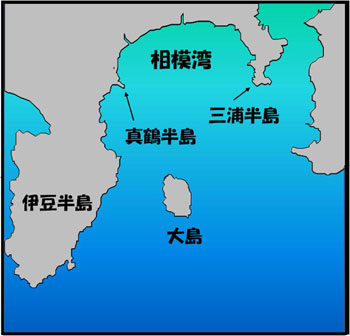
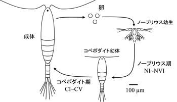

Toda Lab Project Soka University Faculty of Engineering
I. 水圏生態系の研究
A) 相模湾における沿岸生態系の調査
- 海洋環境と植物・動物プランクトンの生物量の中・長期観測
- 有害藻類の大増殖のメカニズムの解明
- 溶存有機炭素の生物化学的特性と役割の評価
- 台風が沿岸生態系に及ぼす影響の調査
- 圧力が動物プランクトンの生理生態に及ぼす影響
B) サンゴ礁生態系の研究
- 動物プランクトン群集の現存量・組成・生産量の時系列変動について
- 動物プランクトン群集の日周変動について
- 安定同位体比を用いたプランクトン群集の栄養構造の研究
- サンゴ粘液の生態学的役割について
- マレー半島周辺サンゴ礁におけるサンゴの群集構造
- サンゴ礁の修復に関する研究
C) ナンキョクオキアミの生産生態学
A) 相模湾における沿岸生態系の調査
沿岸域における低次栄養段階生物、すなわち植物・動物プランクトン、バクテリアの生産生態学を研究しています。沿岸環境について、中長期的環境変動の解析と要因を分析しています。また、近年多くなってきた台風とその沿岸環境への影響を調べています。
本研究室では、1995年から現在に至るまで、横浜国立大学大学院環境情報研究院 菊池研究室と「相模湾における沿岸生態系」に関して共同研究を行ってきました。

真鶴半島

サンプリング風景：動物プランクトンネットの準備をしています
相模湾
相模湾は湾口を太平洋に開き、南方より黒潮が流入し、中心層には北方より親潮水の流入が見られます。また、相模川、酒匂川などの河川から淡水が流入し、湾西部の表層に低塩分水を形成します。このような複雑な水塊構造が、多様な生物相の形成を可能にしています。
相模湾西部に位置する、真鶴半島周辺では、流入した黒潮の支流が湾内で分岐し伊豆半島に沿って北上した流れと、相模湾東部の三浦半島に当たり流行を変え湾北の湘南海岸沿いに南下してきた流れが、真鶴半島沖で合流し潮目を形成し、相模湾における好漁場の一つとして知られています。

１．海洋環境と植物・動物プランクトンの生物量の中・長期観測
温帯の沿岸域では春季から夏季にかけて、水温・日射量の増加や、河川からの栄養塩の流入などにより、光合成を行う独立栄養性の植物プランクトンは成長速度が高まり、増殖を開始します。植物プランクトンの増殖に続き、それを捕食する動物プランクトンが増殖し、さらに魚などのより高次の栄養段階へと生産エネルギーは転換されます。植物・動物プランクトンの生物量、種組成及び、毎年引き起こされる群集遷移のメカニズムを解明することで、水産重要魚類の餌量生物としてのプランクトン群集の生産生態学的役割や、海洋環境の中・長期変動の把握、またそれらの要因の分析や人為的影響の評価が可能になると考えられます。

２．有害藻類の大増殖のメカニズムの解明（～2009年）
有害な植物プランクトンが高密度に増殖する現象は「有害藻類ブルーム(HABs）」と呼ばれ、世界的にみても発生の頻度・規模ともに拡大傾向にあることが指摘されています。HABsによる被害を軽減・防除するには、現場海域における、有害藻類の正確な検出・同定・定量によって、HABsの発生を迅速に予測することが必要不可欠です。従来は、形態的特徴を基準とした同定法が行われてきましたが、同定の精度と作業に多くの時間と労力を要することが問題になっていました。近年では、これらの問題点を克服する手法として、定量性の点で優れたReal-Time PCR法、迅速さの点で優れたFISH法があります。これらの手法を用いて、迅速かつ正確な有害藻類のモニタリングを相模湾沿岸域にて連続的に行い、HABs発生の監視・予測・警告システムの確立が可能となると考えられます。その結果、水産業への被害、毒化した魚介類を食することによる人体への悪影響、沿岸環境の悪化を未然に防ぐことにつながります。

Miyaguchi et al. 2006
Journal of Plankton Researchの表紙を飾りました
Journal of Plankton Researchの表紙を飾りました
３．溶存有機炭素の生物化学的特性と役割の評価（～2010年）
溶存態機炭素（DOC: Dissolved Organic Carbon）とは、海洋中に存在する様々な有機物のうち、一般的に0.7μm程度の孔径を持つフィルターを通過する有機炭素のことを指します。海洋中に存在する有機物の大部分はDOCとして存在しており、大気中のCO2量にほぼ匹敵する巨大な炭素の貯蔵庫となっています。海洋中のDOCは、海洋における物質循環に重要な役割を果たしています。相模湾沿岸域においてDOCと海洋環境データとの関係について調査を行い、海水中のバクテリア群集が利用するDOCは、主に水柱の生物生産過程によるものである可能性が示されました。
４．台風が沿岸生態系に及ぼす影響の調査
生態学的撹乱とは、生態系の構造を破壊する一方、生態系の健全性が保たれる上で、なくてはならないプロセスであると考えられています。生態学的撹乱を起こす自然要因には、台風、モンスーン、エルニーニョなどが知られています。台風は、海洋の物理的環境に不連続的な大きな変化をもたらし、生物の生息環境も激変します。相模湾沿岸域においても台風による海洋環境の変化と、それに伴う生物応答を調べることは、今後の漁海況の予測、環境管理、維持において重要な知見となります。

５.圧力が動物プランクトンの生理生態に及ぼす影響（～2011年）
海洋は陸上と異なり圧力変化の大きい環境であり、海産動物プランクトンの多くは、鉛直移動を行うため、常に圧力の変化にさらされます。本研究室では、動物プランクトンに与える圧力の影響を研究するための新しい圧力装置を作成し、さまざまな動物プランクトンの圧力に対する影響を研究しています。これまで、カイアシ類やオキアミをはじめとした動物プランクトンの卵に圧力を加え、高い圧力が卵発生に及ぼす影響について実験を行ってきました。
結果、高圧力下でも高い孵化率を示す種や、逆に低い孵化率を示す種も確認され、種によって卵の圧力耐性は異なりました。このような結果は、生息深度、産卵深度や系統分類による違いが、卵の圧力耐性に反映しているのではないかと考えています。
卵の圧力耐性は、どのような要因によって決定付けられ、また圧力の生態学的役割は何か。今後、さまざまな動物プランクトンの卵発生をはじめとした、生理生態に与える圧力の影響について研究、考察を進めていく予定です。

圧力装置の構成図

動物プランクトンの日周鉛直移動の様子と
経験する深度
経験する深度
６.カイアシ類の赤ちゃん、ノープリウス幼生の研究
海洋生態系の中で重要な役割を果たす動物プランクトンのカイアシ類ですが、卵から孵化した直後の幼生は成体とは異なる姿をしており、「ノープリウス幼生」と呼ばれます。このノープリウス幼生は海洋中の微生物を捕食することが推察されており、微生物食物連鎖において捕食者として働きます。そして、ノープリウス幼生は肉食性の動物プランクトンや仔稚魚の重要な餌資源として知られています。ノープリウス幼生を介した物質輸送を考えるためには、ノープリウス幼生の摂餌生態を理解する必要があります。本研究室では、相模湾真鶴港において、現場観測や室内実験、電子顕微鏡観察などの多角的なアプローチにより、カイアシ類ノープリウス幼生の個体数変動や摂餌速度、餌料生物を調査しています。

図.
カイアシ類の生活史：卵から孵化したノープリウス幼生は脱皮を繰り返し、6つのステージ(NI~NVI)を経てコペポダイト幼体へ成長します。その後さらに脱皮を繰り返して、5つのステージ(CI~CV)を経て成体になります。
７．海面ミクロ層（SML）に生息する微生物に関する研究
海面ミクロ層（Sea surface microlayer, SML）とは、海洋の表層わずか1 mm未満の層のことです。SMLは大気と海洋の境界に位置しており、地球の表面の約70%を占めています。そのため、SMLはガスや粒子などの大気・海洋間の物質交換において重要な役割を担っており、生物地球科学的な物質循環や気候変動を考慮する上で重要な領域です。

図. 海面ミクロ層（SML）
SMLには微生物がより多く存在していることが報告されており、SMLを介する物質循環を考えるためにはSMLに存在する微生物を理解する必要があります。本研究室では、温帯沿岸域に属する相模湾においてSMLに生息する微生物の変動や役割を調査しています。
B) サンゴ礁生態系の研究
- 動物プランクトン群集の現存量・組成・生産量の時系列変動について
- 動物プランクトン群集の日周変動について（～2012年）
- 安定同位体比を用いたプランクトン群集の栄養構造の研究
- サンゴ粘液の生態学的役割について
- マレー半島周辺サンゴ礁におけるサンゴの群集構造
- サンゴ礁の修復に関する研究（～2007年）
- 熱帯サンゴ礁海域の紫外線透過率と生物光学的要素の季節変動について
マレーシアで、サンゴ礁域の生態系構造とそれらの環境保全に関する研究を行っています。マレー半島全域にわたる調査は過去3度にわたって実施されており、サンゴ礁の保全状態が調べられました。また、近年はサンゴ礁生態系におけるプランクトンの生産生態・栄養構造に関する研究、モンスーンが海洋環境に与える影響に関する研究、サンゴ幼生の加入環境、サンゴの人工定着基盤の研究を行っているほか、漁礁の評価試験なども実施しています。
共同研究機関： マレーシア国立大学(UKM)、セランゴール州立大学(UNISEL)、テレンガヌ州立大学(UMT)
１．動物プランクトン群集の現存量・組成・生産量の時系列変動について（～2012年）
動物プランクトンは、サンゴ礁生態系においては一次生産物をより高次の栄養段階生物（サンゴやギ魚類など）へ結びつける重要なリンクを担っており、動物プランクトンの生産量について調べることは、サンゴ礁生態系の物質循環を理解する上で重要です。
当研究室では、マレーシア国立大学と協同で、マレーシア・テォオマン島周辺のサンゴ礁域における動物プランクトン群集の生物量や生産量の季節変化を調べてきました。 動物プランクトン群集の生産量から日間餌要求量を推定したところ、現存する植物プランクトンだけでは植食性動物プランクトンの餌要求量を十分に満たすことできず、豊富に存在するデトリタスが重要な餌供給源の1つとなっている可能性が示されました。また、デトリタスは主にサンゴ粘液に由来すると推定され、動物プランクトン群集の生産は、植物プランクトンと主にサンゴ粘液に由来するデトリタスによって支えられていると思われ、これらを基点にマレーシア・サンゴ礁の漂泳区生態系は成り立っていると考えられます。

船上でのプランクトンの採集風景

採集したプランクトン試料を処理しているところ
（ティオマン島海洋公園内の実験所にて）
（ティオマン島海洋公園内の実験所にて）

ティオマン島のサンゴ礁におけるプランクトン群集内の炭素フロー
(Nakajima 2009)
(Nakajima 2009)
２．動物プランクトン群集の日周変動について（～2012年）
サンゴ礁に生息する動物プランクトンは、その個体数・生物量・組成が昼と夜とで大きく異なります。また夜間の間でもその生物量は大きく変動します。そのため、動物プランクトンを短い時間間隔で採集し、その日周パターンを知ることは、動物プランクトン群集の正しい生産量を見積もる上で極めて重要です。
当研究室では、マレーシア東海岸に位置するレダン島とティオマン島のサンゴ礁において、動物プランクトンを３時間毎に48時間連続して採集を行い、動物プランクトンの日周パターンについて研究を行ってきました。


レダン島のサンゴ礁における動物プランクトンの日周変動
動物プランクトンは夜間の早い時間帯（21時）に
個体数・生物量のピークを見せることが明らかとなった
(Nakajima et al. 2008)
動物プランクトンは夜間の早い時間帯（21時）に
個体数・生物量のピークを見せることが明らかとなった
(Nakajima et al. 2008)

夜間、ダイビング中に水中ライトを当てると、
おびただしい数の動物プランクトンが集まってくる
おびただしい数の動物プランクトンが集まってくる
３．安定同位体比を用いたプランクトン群集の栄養構造の研究
サンゴ礁に生息するプランクトンの食物構造はあまりに複雑で、未だによく分かっていません。当研究室では、テレンガヌ州立大学と協同で、 マレーシアのビドン島におけるサンゴ礁に分布するプランクトン群集を定期的に採集し、 個体群の安定同位体比を測定することで食物連鎖の研究を行っています。

ビドン島のサンゴ礁

採集した動物プランクトンは、ただちに
顕微鏡下で観察し、種・属別に分類する
顕微鏡下で観察し、種・属別に分類する

採集された動物プランクトンの例

ガスクロマトグラフ／安定同位体比分析計
４．サンゴ粘液の生態学的役割について
サンゴ礁は極めて貧栄養な海域として知られていますが、一方で高いバクテリア生産が報告されています。この高いバクテリア生産を支えているのは、サンゴが放出するサンゴ粘液由来の有機物であると考えられており、サンゴ粘液がサンゴ礁生態系の物質循環に果たす役割について近年注目が集まっています。
当研究室では、マレーシア国立大学とテレンガヌ州立大学と協同で、サンゴが放出するサンゴ粘液の生産量ならびにバクテリア群集によるサンゴ粘液の利用について研究を行っています。

ミドリイシ類サンゴが放出する粘液

サンゴ粘液を添加した濾過海水（○,●）とサンゴ粘液無添加の濾過海水（□,■）
におけるバクテリア数（左）と溶存態有機炭素(DOC)（右）の時系列変動
サンゴ粘液を添加した実験区では、バクテリア数の有意な増大とDOC量の減少が
観察され、バクテリアがサンゴ粘液のDOCを利用して増えることが示された
(Nakajima et al. 2009)
におけるバクテリア数（左）と溶存態有機炭素(DOC)（右）の時系列変動
サンゴ粘液を添加した実験区では、バクテリア数の有意な増大とDOC量の減少が
観察され、バクテリアがサンゴ粘液のDOCを利用して増えることが示された
(Nakajima et al. 2009)
５．マレー半島周辺サンゴ礁におけるサンゴの群集構造
2001年、2007年、2013年にマレー半島周辺海域のサンゴ礁におけるサンゴ群集の被覆度と群集構造についての大規模な調査を実施しました。マレーシア国立大学、セランゴール州立大学と協同で、各年約20日間で5島13地点のサンゴ礁の調査をしました。

2001年、2007年、2013年で調査した島々。カパス島は2001年のみ、ビドゥン島は2013年のみ調査を実施した

サンゴ礁上にラインを引き、50cm間隔に写真を撮っていく。

撮影した写真は、左図のように画像解析を行い、サンゴの被覆率を調べる
2001年と2007年の結果から被覆度にはほとんど差はありませんでしたが、サンゴの群集構造はマレー半島の西海岸と東海岸で大きく異なり、西海岸ではPorites属という塊状のサンゴが優占し、東海岸ではAcropora属とMontipora属という枝状、塊状のサンゴが優占していたことが明らかとなりました。また、多様度指数（H’）は、西海岸よりも東海岸で高い傾向がみられました。同じ緯度にも関わらず西と東で群集構造が大きく違う理由として、流入する土砂等の堆積物、モンスーンなどの気象擾乱、サンゴの成長速度、人為的影響などが影響している可能性が考えられます。

西海岸で優占したPorites属(A)と東海岸で優占したAcropora属(B)、Montipora属(C)
６．サンゴ礁の修復に関する研究（～2007年）
当研究室では、サンゴ礁の修復に関する試みとして、マレーシア・ティオマン島においてサンゴ幼生の加入調査やサンゴの人工定着基盤の研究のほか、人工漁礁の評価試験などを実施しています。共同研究機関は、マレーシア国立大学とセランゴール工業大学。

海中に沈められたセラミック基盤

海中に沈められたコンクリート製基盤

コンクリート基盤設置から数ヶ月後に、
基盤に付着し成長したサンゴの一種
基盤に付着し成長したサンゴの一種

マレーシア・ティオマン島のサンゴ礁では、
ミドリイシ科サンゴの人工基盤への新規加入はモンスーン前のみに観察された
一方、ハナヤサイサンゴ類の新規加入は通年観察された
(Maekawa et al. unpublished data)
ミドリイシ科サンゴの人工基盤への新規加入はモンスーン前のみに観察された
一方、ハナヤサイサンゴ類の新規加入は通年観察された
(Maekawa et al. unpublished data)

海底に沈められた人工漁礁
７．熱帯サンゴ礁海域の紫外線透過率と生物光学的要素の季節変動について（2010年～）
熱帯に生息するサンゴは一年を通して、強い紫外線に暴露されます。浅いサンゴ礁では、サンゴに共生する植物プランクトンはDNA損傷などの紫外線の影響を強く受けていると考えられます。サンゴ礁海域における紫外線透過率と光を吸収する生物光学的要素の季節変動を調べることは、熱帯海洋生態系の光環境を理解する上で重要です。
当研究室では、マレーシア国立トレンガヌ大学・セランゴール大学と協同で、マレーシア・ビドゥン島周辺のサンゴ礁海域における紫外線透過率と生物光学的要素の季節変動を調べています。 マレー半島の東海岸に卓越する北東モンスーンの影響を調査したところ、北東モンスーン時(11月－1月)と非モンスーン時(2月―10月)では紫外線の透過率が異なり、北東モンスーン時に紫外線の透過率が浅くなることがわかりました。本研究により熱帯サンゴ礁海域における紫外線の透過率の季節変動が明らかとなりました。

マレーシア・ビドゥン島周辺海域での研究風景

マレーシア・ビドゥン島からみた海

ビドゥン島周辺のサンゴ礁海域における光の減衰係数(Kd(λ))の季節変動
(Mizubayashi et al. 2013)
C) ナンキョクオキアミの生産生態学
ナンキョクオキアミは地球上で最大の生物資源です。人工飼育によって、幼生の餌料成分と成長速度、脱皮間隔などの関係について、ナンキョクオキアミの生理生態学を研究しています。
ナンキョクオキアミEuphausia superbaは、南極海に生息する甲殻類で、体長は最大60mm以上に達し、寿命は５～７年と考えられています。南極海に生息する鳥類、鯨類、ペンギンなどの餌資源になっており、南極の生態系の鍵種です。その生物量(およそ5億トン)は地球上で最大であるといわれ、現在も本種の資源量や生態について世界各国が注目して調査を行っています。本研究室では、名古屋港水族館及びオーストラリア南極調査局との共同研究の下、以下のような研究に取り組んできました。

１．ナンキョクオキアミの人工飼育下での成長に関する研究 ナンキョクオキアミ幼生の餌と成長速度ならびに脱皮間隔の関係
名古屋港水族館では平成12年度から世界で初めて、ナンキョクオキアミの人工孵化に成功しました。本研究室では名古屋港水族館との共同研究の下、卵から飼育を行い、その成長を観察し、生理生態学的な研究を行ってきました。卵の成長速度と水温との関係や、餌の質と幼生の脱皮間隔、また成長速度との関係について調べてきました。その結果、これまで一般的にナンキョクオキアミの主な餌は植物プランクトンと考えられていましたが、動物性の餌も成長には必要であるということが明らかになりました。

巨大な水槽の中にオキアミを飼っている

餌として、植物プランクトンを培養中

成長を測るパラメーターとして
脱皮殻の尾の部分の長さを測定する
脱皮殻の尾の部分の長さを測定する
２．生産生態と圧力に関する研究
―圧力環境が胚発生と行動に与える影響―（～2010年）
ナンキョクオキアミの卵は表層近くで産卵されてから深層へと沈降し、深度1000～2000mの間で孵化し、幼生は餌を求めて表層へと上昇するという、広範囲のOVM(個体発生に伴う鉛直移動)を行います。そのためナンキョクオキアミは卵や幼生の時に生活史の中でも最も高い圧力にさらされます。これまでにナンキョクオキアミの卵の発生は大気圧下では多く観察されていますが、実際の現場の圧力では卵発生にどのような影響をうけるかについての知見はごく限られています。また、孵化した幼生が上昇行動を行うきっかけとして、圧力を感知して上昇行動を行うという仮説もあります。本研究室では、圧力装置の開発から取り組み、ナンキョクオキアミの初期成長段階における圧力の影響を明らかにすることを目指し、現在研究を進めています。

オキアミは成長と共に生息深度を移動している。
卵から孵化した幼生は餌を求めて表層を目指して泳ぐ。
卵から孵化した幼生は餌を求めて表層を目指して泳ぐ。

海氷に覆われた南極海を進む調査船
海氷の下にはたくさんのナンキョクオキアミが生息している
海氷の下にはたくさんのナンキョクオキアミが生息している

船内の冷蔵実験室

卵内で幼生が成長する様子が見える

バケツに入りきれないほどに取れたナンキョクオキアミ
３．南極海におけるナンキョクオキアミ個体群への寄生生物の影響
南極海に生息するナンキョクオキアミの消化管中にはグレガリナと呼ばれる原生動物が多数生息しています。この原生生物がオキアミの成長に与える影響や、それらの寄生の生態戦略に加え、消化管内のどの部分に多く生息しているかについて調べられてきました。またオキアミは脱皮する時に消化管内も一緒に脱皮しますが、この時グレガリナがどのようにしてオキアミの消化管内にて生存し続けられるかについての戦略についても研究されました。

オキアミの食道管の様子

グレガリナ(Cephaloidophora pacifica Avdeev)
と呼ばれる原生動物がオキアミの体内に寄生している
と呼ばれる原生動物がオキアミの体内に寄生している